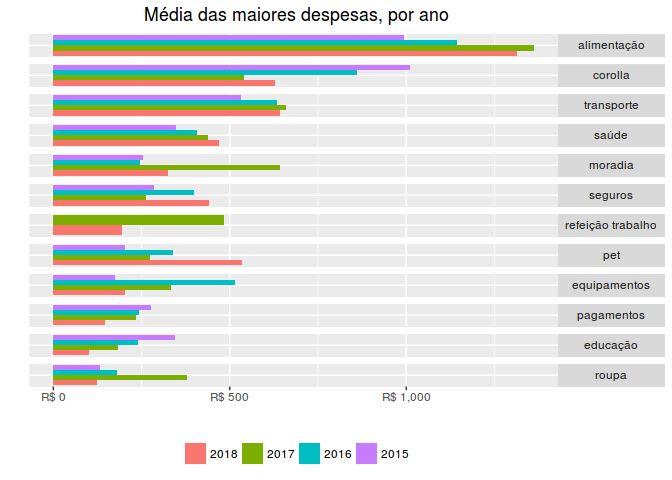
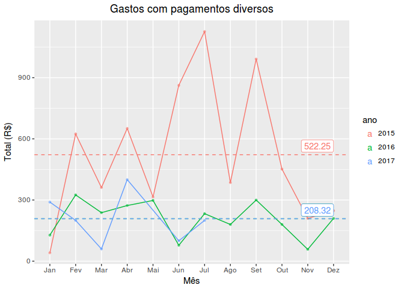

Em progresso
- acessar API da plataforma - ainda não disponibilizado pela plataforma
Objetivo
A plataforma Mobills é um serviço pago que, através de um app android, leitura de SMSs do banco e de interação via web, registra despesas realizadas, armazena os dados na nuvem e permite a posterior exportação destes dados.
A interface disponibilizada via APP ou web possui algumas funcionalidades, tais como:
- lançamento de despesas / receitas
- somatória e cálculo de saldo
- gráfico de despesas por categoria, por mês.
Mas algumas funcionalidades importantes estão faltando, entre elas:
- acompanhamento da evolução das despesas por categoria ao longo dos meses
- gráficos e tabelas que permitam analisar mais a sério o controle de gastos ao longo do tempo
- gráficos e tabelas que indiquem tendências de gastos relacionadas à estações do ano, datas comemorativas ou datas-chave
- evidências que indiquem necessidade de mudanças no controle financeiro
Este estudo se destina justamente a suprir estas deficiências apontadas e, através do banco de dados gerado pela plataforma, analisar o orçamento doméstico com uma visão mais ampla que possibilitará um maior entendimento do mesmo, dando ao usuário fundamentação e evidências para tomada de decisões que poderão alterar positivamente o rumo de seu planejamento financeiro
A plataforma mobils pode ser encontrada em:
O aplicativo para android pode ser encontrado em:
https://play.google.com/store/apps/details?id=br.com.gerenciadorfinanceiro.controller
Software utilizado e instruções de uso
Esta análise é realisada através dos seguintes softwares:
- R version 3.4.1 (2017-06-30)
- Platform x86_64-pc-linux-gnu
- OS Description: Linux Mint 18.1 Serena
Para utilizar o programa, acessar a plataforma web e baixar os bancos de dados exportado no formato csv.
Os arquivos devem ser guardados na pasta data e devem conter a string “mobills” em seu nome. É aconselhado nomear o arquivo usando também um indicador de data.
Ex: bancoX-mobills-2015a2017.csv
Podem ser utilizados vários arquivos complementares, não sendo necessário exportar um banco de dados completo toda vez que for necessário incluir novos dados.
O programa analisa a pasta dados e irá processá-los novamente sempre que houver novidades, salvando o banco de dados tratado para o arquivo dados-ok.rds. Caso não haja novidades, o programa somente carrega este banco de dados já tratado, acelerando consideravelmente o processo.
Processamento dos dados
O banco de dados é carregado e preparado para que possamos responder às questões levantadas.
Tratamento inicial dos dados
Antes de fazer qualquer inferência, vamos primeiramente analisar os dados exportados pela plataforma, procurando avaliar sua qualidade e quais são as transformações necessárias para o seu uso.
Análise da qualidade dos dados

Analisando este gráfico, verificamos um outlier em março de 2015, tipo pagamentos.
Vamos olhar esta informação mais de perto:
| data | tipo | descrição | valor |
|---|---|---|---|
| 2015-03-07 | pagamentos | saque | 230 |
| 2015-03-10 | pagamentos | saque | 90 |
| 2015-03-10 | pagamentos | banco | 41 |
| 2015-03-25 | pagamentos | pagamento parcial-visa | 4077 |
Da tabela acima, observa-se que consta um lançamento referente a pagamento de cartão de crédito. Porém não é assim que o restante dos lançamentos foram feitos: não foram registrados totais. Este, portanto, foi um erro de uso da plataforma. Podemos, portanto, retirar este outlier com segurança.
| data | ano | mes | mes.ano | tipo | descrição |
|---|---|---|---|---|---|
| 2015-06-25 | 2015 | Jun | 2015-06 | corolla | 02-04 bateria (3/5) |
| 2015-06-25 | 2015 | Jun | 2015-06 | alimentação | 13-05 hitamax |
| 2015-06-25 | 2015 | Jun | 2015-06 | roupa | 19-02 extra lençol e fonte (4/8) |
| 2015-06-25 | 2015 | Jun | 2015-06 | beleza | 27-03 norma (3/3) |
| 2015-06-25 | 2015 | Jun | 2015-06 | equipamentos | 14-04 copafer (2/3) |
| 2015-06-25 | 2015 | Jun | 2015-06 | telefonia | tim |
| data | ano | mes | mes.ano | tipo | descrição |
|---|---|---|---|---|---|
| 2015-06-25 | 2015 | Jun | 2015-06 | investimento | 17-12 joías auth (4/4) |
| 2015-06-25 | 2015 | Jun | 2015-06 | beleza | cortina da sala (3/10) |
| 2015-06-25 | 2015 | Jun | 2015-06 | equipamentos | 08-04 guitarra (3/8) |
| 2015-06-25 | 2015 | Jun | 2015-06 | transporte | 17-05 gasolina |
| 2015-06-25 | 2015 | Jun | 2015-06 | roupa | tênis aline (2/3) |
| 2015-06-25 | 2015 | Jun | 2015-06 | lazer | net flux |
Além disso, verifica-se que todas as despesas pagas no cartão de crédito ficaram registradas na data de vencimento do cartão, dia 25. Este é um defeito da plataforma.
Desta forma, não é possível dizer se a despesa foi feita no mês anterior ou no próprio mês. Ela apenas foi paga no mês onde é lançada.
Uma vez que a fatura deste cartão é fechada no dia 15, todas as compras realizadas a partir do dia 16 são cobradas apenas na próxima fatura.
No entanto, como isso ocorre para todos os dados da mesma forma, não há impacto impeditivo na análise.
Como podemos ver no gráfico 2, não há mais outliers, todos os erros de coleta dados foram filtrados.
O próximo passo é estudar os tipos de despesas que mais se destacam.
Maiores Despesas por tipo
Na tabela abaixo temos um ranking dos maiores tipos de despesa na média de todos os anos:
| rank | tipo | media |
|---|---|---|
| 1 | alimentação | 1180.53 |
| 2 | transporte | 576.15 |
| 3 | corolla | 436.28 |
| 4 | saúde | 404.80 |
| 5 | moradia | 346.00 |
| 6 | pagamentos | 313.00 |
| 7 | seguros | 273.78 |
| 8 | educação | 246.46 |


Maiores Variações
Pode ser interessante analisar as categorias que apresentam as maiores variações ao longo dos anos
Na tabela abaixo temos um ranking dos tipos de despesas que apresentaram os maiores desvios padrões da média:
| rank | tipo | sd |
|---|---|---|
| 1 | alimentação | 217.81 |
| 2 | moradia | 189.29 |
| 3 | pagamentos | 181.22 |
| 4 | corolla | 144.37 |
| 5 | educação | 143.32 |
| 6 | saúde | 55.89 |

Principais tipos de despesas
Análise por tipo de despesa: Alimentação
O primeiro item da lista dos tipos de despesas mais oscilantes é alimentação. Vejamos como este tipo de despesa se comporta ao longo dos anos:

Observa-se:
- tendência a aumento de gastos em maio de 2015 e 2016
- até 2016, tendência a aumento de gastos em julho
- aumento da média em 2017
- as compras maiores são feitas a cada 2 meses,
Vamos analisar na tabela de dados os principais registros:
| data | descrição | valor |
|---|---|---|
| 2015-07-27 | 16-06 compras | 566 |
| 2015-07-27 | 04-07 feira | 138 |
| 2015-07-27 | 27-06 feira | 103 |
| 2015-07-27 | 29-06 walmart | 85 |
| 2015-07-27 | 11-09 feira | 76 |
| 2015-07-27 | 20-06 feira | 72 |
| data | descrição | valor |
|---|---|---|
| 2016-07-25 | assai atacadista | 482.89 |
| 2016-07-25 | compras pão de açúcar | 475.00 |
| 2016-07-25 | sacolao saude st | 117.15 |
| 2016-07-25 | sacolao saude st | 92.55 |
| 2016-07-25 | sacolao saude st | 88.82 |
| 2016-07-25 | sacolao saude st | 74.67 |
| data | descrição | valor |
|---|---|---|
| 2017-06-25 | extra 11-06 | 383.11 |
| 2017-06-25 | sacolao saude st 12-06 | 190.85 |
| 2017-06-25 | sacolao saude st 31-05-17 | 142.16 |
| 2017-06-25 | feira 22-05 | 120.00 |
| 2017-06-25 | sacolao saude st 14-05 | 99.74 |
| 2017-06-25 | carrefour sto 28-05 | 85.81 |
| 2017-06-25 | mercado 11-06 | 80.80 |
| 2017-06-25 | carrefour sto 248 25-05 | 61.48 |
Analizando os dados mais de perto, verifica-se que:
- até 2016, há tendência para gastos extras com a páscoa.
- em julho de 2016 foram feitas 2 compras mensais, para aproveitar uma promoção.
- o aumento da média em 2016 ocorre porque, além dos fatores acima, em março 2015 os gastos não foram registrados.
- o aumento da média em 2017 ocorre porque a família aumentou.
Por hora, não fica evidenciada a necessidade de mudanças em despesas com alimentação.
Análise por tipo de despesa: Moradia
O segundo da lista dos tipos de despesas mais oscilantes é moradia. Vejamos como este tipo de despesa se comporta ao longo dos anos:
Este gráfico nos mostra que a média de gastos em 2017 está bem acima das médias dos outros anos. Vamos ver em detalhe quais foram os gastos de abril para cada ano:
| data | descrição | valor |
|---|---|---|
| 2015-04-28 | 31-01 c&c (2/3) | 113.66 |
| 2015-04-30 | luz | 100.00 |
| 2015-04-30 | conta água | 50.00 |
| 2015-04-16 | vigia | 45.00 |
| data | descrição | valor |
|---|---|---|
| 2016-04-21 | luz | 120 |
| 2016-04-30 | conta água | 62 |
| 2016-04-16 | vigia | 45 |
| data | descrição | valor |
|---|---|---|
| 2017-04-15 | seguro residencia | 177 |
| 2017-04-20 | faxina | 120 |
| 2017-04-21 | luz | 120 |
| 2017-04-26 | purificador europa | 89 |
| 2017-04-30 | conta água | 62 |
| 2017-04-26 | monigas com gas ltda 31-03 | 60 |
| 2017-04-16 | vigia | 45 |
O grande aumento na média deve-se ao fato de que em 2017:
- estamos agora contratando faxina
- temos seguro-residência
- gás de cozinha antes era lançado como alimentação
Por hora, não fica evidenciada a necessidade de mudanças em despesas com moradia.
Análise por tipo de despesa: Pagamentos

Observa-se:
- valores elevados de fevereiro a setembro de 2015
- queda nas médias dos demais anos
Vamos analisar a tabela de dados, em especial para valores acima de R$200,00:
| data | descrição | valor |
|---|---|---|
| 2015-02-26 | 25-02 saque | 250 |
| 2015-03-07 | saque | 230 |
| 2015-04-01 | defict mes anterior | 230 |
| 2015-05-01 | defict mes anterior | 230 |
| 2015-06-01 | deficit mês anterior | 470 |
| 2015-07-01 | defict mes anterior | 766 |
| 2015-08-03 | deficit mês anterior | 250 |
| 2015-09-01 | deficit mês anterior | 490 |
Verifica-se que este aumento ocorreu em 2015 porque a cada vez que as metas de economia não eram alcançadas, o valor gasto acima da meta era lançado no mês seguinte como déficit, atingindo o pico em agosto.
Por outro lado, verifica-se que nunca mais houve deficit.
Análise por tipo de despesa: Corolla

Observa-se:
- valores altos de agosto a novembro de 2015
- queda a partir de jul-16
- novo pico em junho-17
Vamos analisar a tabela de dados:
| data | descrição | valor |
|---|---|---|
| 2015-08-19 | ducha | 10.50 |
| 2015-08-23 | seguro corolla (1/4) | 577.00 |
| 2015-08-25 | 02-04 bateria (5/5) | 65.00 |
| 2015-08-25 | suspensão corolla (2/3) | 166.66 |
| 2015-09-01 | lavagem carro | 30.00 |
| 2015-09-23 | lavagem carro | 10.00 |
| 2015-09-23 | seguro corolla (2/4) | 577.00 |
| 2015-09-25 | manutenção corolla 190k (1/4) | 193.75 |
| 2015-09-25 | suspensão corolla (3/3) | 166.66 |
| 2015-10-23 | seguro corolla (3/4) | 577.00 |
| 2015-10-25 | manutenção corolla 190k (2/4) | 193.75 |
| 2015-11-23 | seguro corolla (4/4) | 577.00 |
| 2015-11-25 | manutenção corolla 190k (3/4) | 193.75 |
| 2015-12-28 | manutenção corolla 190k (4/4) | 193.75 |
| data | descrição | valor |
|---|---|---|
| 2017-06-02 | manutenção fiesta | 1361.00 |
| 2017-06-08 | seguro fiesta | 132.00 |
| 2017-06-25 | pneus 25-05 (1/3) | 225.33 |
Desta forma, verifica-se que a alta em 2015 ocorreu porque em agosto foi renovado o seguro, parcelado em 4x, isso explica as altas até novembro; em setembro foi feita uma manutenção de 10k, também parcelada em 4x.
Por outro lado, a queda a partir de julho de 2016 é explicada pela venda do carro neste mesmo mês.
Em junho de 2017 foi feita um manutenção signficativa no carro, além da troca de pneus.
Conclusão
Plataforma Mobills:
- ainda não há API que permita o acesso direto aos dados
- existe um problema com as datas das compras feitas em cartão de crédito: são registradas todas como se fossem feitas na data de vencimento do cartão
- desta forma, ao registrar estas compras, anotar na descrição a data da transação
Gastos pessoais
- devem ser observados com mais cuidado os tipos de despesa: alimentação, moradia, pagamentos, corolla e educação
- deve-se tomar cuidado com os gastos para a páscoa
- havia um déficit em 2015, mas foi superado
- o seguro do carro tinha um valor elevado e as manutenções mantinham as médias de gasto mensal na casa dos R$500, mas esse problema acabou com a venda do carro.